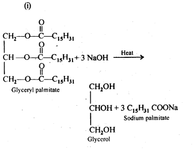
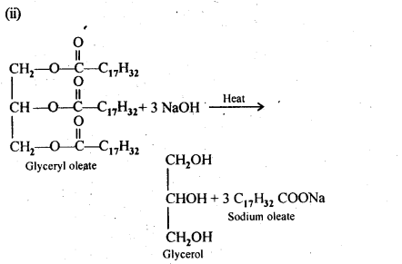
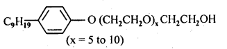
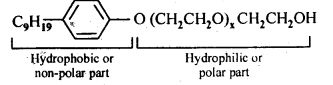
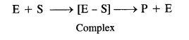
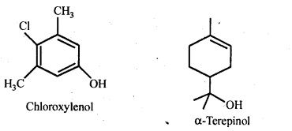
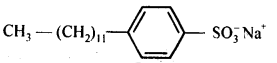
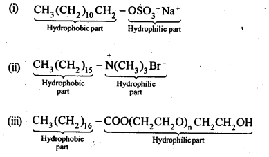

NCERT Solutions For Class 12 Chemistry Chapter 16 Chemistry in Everyday Life
Topics and Subtopics in NCERT Solutions for Class 12 Chemistry Chapter 16 Chemistry in Everyday Life:
| Section Name | Topic Name |
| 16 | Chemistry in Everyday Life |
| 16.1 | Drugs and their Classification |
| 16.2 | Drug-Target Interaction |
| 16.3 | Therapeutic Action of Different Classes of Drugs |
| 16.4 | Chemicals in Food |
| 16.5 | Cleansing Agents |
NCERT INTEXT QUESTIONS
16.1. Sleeping pills are recommended by doctors to the patients suffering from sleeplessness but it is not advisable to take its doses without consultation with the doctor. Why?
Ans: Most of drugs taken in doses higher than recommended may produce harmful effects and act as poison and cause even death. Therefore, a doctor must always be consulted before taking the drug.
16.2. “Ranitidine is an antacid” With reference to which classification, has this statement been given?
Ans: Ranitidine is labelled as antacid since it is quite effective in neutralising the excess of acidity in the stomach. It is sold in the market under the trade name Zintac.
16.3. Why do we require artificial sweetening agents?
Ans: To reduce calorie intake and to protect teeth from decaying, we need artificial sweeteners.
16.4. Write the chemical equation for preparing sodium soap from glyceryl oleate and glyceryl palmitate. Structures of these compounds are given below:
(i) (C15H31COO)3C3H5-Glyceryl palmitate
(ii) (C17H32COO)3C3H5-Glyceryl oleate
Ans:


16.5. Following type of non-ionic detergents are present in liquid detergents, emulsifying agents and wetting agents. Label the hydrophilic and hydrophobic part in the molecule. Identify the functional group (s) present in the molecule.

Ans:

Functional groups present in the detergent molecule are:
(i)ether
(ii)1°alcoholic group
NCERT EXERCISES
16.1. Why do we need to classify drugs in different ways?
Ans: Drugs are classified in following different ways:
(a) Based on pharmacological effect.
(b) Based on action on a particular biochemical process.
(c) Based on chemical structure.
(d) Based on molecular targets.
Each classification has its own usefulness.
(а) Classification based on pharmacological effect is useful for doctors because it provides them the whole range of drugs available for the treatment of a particular disease.
(b) Classification based on action on a particular biochemical proc*ess is useful for choosing the correct compound for designing the synthesis of a desired drug.
(c) Classification based on chemical structure helps us to design the synthesis of a number of structurally similar compounds having different substituents and then choosing the drug having least toxicity.
(d) Classification on the basis of molecular targets is useful for medical chemists so that they can design a drug which is most effective for a particular receptor site.
16.2. Explain the following as used in medicinal chemistry
(a) Lead compounds
(b) Target molecules or drug targets.
Ans:
(a) Lead compounds are the compounds which are effective in different drugs. They have specific chemical formulas and may be extracted either from natural sources (plants and animals) or may be synthesised in the laboratory.
(b) Target molecules or drug targets. An enzyme (E) functions by combining with the reactant (called substrate) denoted as ‘S’ to form an activated complex known as enzyme-substrate complex (E-S). The complex dissociates to form product and releases the enzyme for carrying out further activity.

16.3. Name the macro molecules that are chosen as drug targets.
Ans: Proteins, carbohydrates, lipids and nucleic acids are chosen as drug targets.
16.4. Why the medicines should not be taken without consulting doctors?
Ans: No doubt medicines are panacea for most of the body ailments. But their wrong choice and overdose can cause havoc and may even prove to be fatal. Therefore, it is of utmost importance that the medicines should not be given without consulting doctors.
16.5. Define the term chemotherapy.
Ans: It is the branch of chemistry that deals with the treatment of diseases by using chemicals as medicines.
16.6. Which forces are involved in holding the drugs to the active site of enzymes?
Ans: The following forces are involved in holding the drugs to the active site of enzymes:
(a) Hydrogen bonding
(b) Ionic bonding
(c) Dipole-dipole interactions
(d) van der Waals interactions
16.7. Antacids and antiallergic drugs interfere with the function of histamines but do not interfere with the function of each other. Explain.
Ans: They donot interfere with the functioning of each other because they work on different receptors in the body.Histamine stimulates the secretion of pepsin and hydrochloric acid in the stomach. The drug cimetidine (antacid) was designed to prevent the interaction of histamine with the receptors present in the stomach wall. This resulted in release of lesser amount of acid. Antacid and antiallergic drugs work on different receptors.
16.8. Low level of noradrenaline is the cause of depression. What type of drugs are needed to cure this problem? Name two drugs.
Ans: In case of low level of neurotransmitter, . noradrenaline, tranquilizer (antidepressant) drugs are required because low levels of noradrenaline leads to depression. These drugs inhibit the enzymes which catalyse the degradation of noradrenaline. If the enzyme is inhibited, noradrenaline is slowly metabolized and can activate its receptor for longer periods of time thereby reducing depression. Two important drugs are iproniazid and phenylzine.
16.9. What is meant by the term broad spectrum antibiotics? Explain.
Ans: Broad spectrum antibiotics are effective against several different types or wide range of harmful bacteria. For example, tetracycline, chloramphenicol and of loxacin. Chloramphenicol can be used in case of typhoid, dysentry, acute fever, urinary infections, meningitis and pneumonia.
16.10. How do antiseptics differ from disinfectants ? Give one example of each.
Ans: Many times, the same substance can act as an antiseptic as well as disinfectant by changing the concentration of the solution used. For example, a 0.2 per cent solution of phenol acts as an antiseptic and its 1 percent solution is a disinfectant. Chlorine is used in India for making water fit for drinking at a concentration of 0.2 to 0.4 ppm (parts per million). Low concentration of sulphur dioxide is used for sterilizing squashes for preservation. A few points of distinction between antiseptics and disinfectants are listed.
| Antiseptics | Disinfectants |
| 1. Can kill or prevent the growth of micro-organisms. | 1.Can kill micro-organisms. |
| 2. Do not harm the living tissues. Therefore, these can be applied to the skin. | 2. Toxic to the living tissues. Therefore, these cannot be applied to the skin. |
| 3. These are used for the dressing of wounds, ulcers and in the treatment of diseased skin. | 3. These are used for disinfecting floors, toilets, drains, instruments etc. |
16.11. Why are cimetidine and ranitidine better antacids than sodium hydrogencarbonate or magnesium or aluminium hydroxide?
Ans: If excess of NaHCO3 or Mg(OH)2 or Al(OH)3 is used, it makes the stomach alkaline and thus triggers the release of even more HCl which may cause ulcer in the stomach. In contrast, cimetidine and ranitidine prevent the interaction of histamine with the receptor cells in the stomach wall and thus release of HCl will be less as histamine stimulates the secretion of acid.
16.12. Name a substance which can be used as an antiseptic as well as disinfectant.
Ans: 0.2% solution of phenol acts as antiseptic while 1% solution acts as a disinfectant.
16.13. What are the main constituents of dettol?
Ans: Chloroxylenol .and α-terpineol in a suitable solvent.

16.14. What is tincture of iodine? What is its use?
Ans: 2-3% solution of iodine in alcohol and water is called tincture of iodine. It is a powerful antiseptic. It is applied on wounds.
16.15. What are food preservatives?
Ans: Preservation has a major role in the food products. Chemically preserved squashes and crushes can be kept for a fairly long time even after opening the seal of bottle.
A preservative may be defined as the substance which is capable of inhibiting or arresting the process of fermentation, acidification or any other decomposition of food. Salting i.e. addition of table salt is a well known method for food preservation and was applied in ancient times for preserving raw mangoes, tamarind, meat, fish etc. Sugar syrup can also act as a preservative. Vinegar is a useful preservative for pickles. Apart from these, sulphur dioxide and benzoic acid can be employed for the preservation of food. The major source of sulphur dioxide is potassium metabisulphite (K2S2O5). It is fairly stable in neutral and alkaline medium but gets decomposed by weak acids such as carbonic, citric, tartane and malic acids. Benzoic acid is used either as such or in the form of sodium benzoate. However, sulphur dioxide has a better preservative action than sodium benzoate against bacteria and moulds. It also retards the development of yeast in juice but fails to arrest their multiplication once the number has reached a high value. Sorne salts of sorbic acid and propionic acid are also being used these days for the preservation of the food.
The use of preservatives must be properly controlled as their indiscriminate use is likely to be harmful. The preservative should not be injurious to health and should be also non-irritant.
16.16. Why is the use of aspartame limited to cold foods and drinks?
Ans: This is because it decomposes at baking or cooking temperatures and hence can be used only in cold foods and drinks as an artificial sweetener
16.17. What are artificial sweetening agents? Give two examples.
Ans: Artificial sweeteners are chemical substances which are sweet in taste but do not add any calories to our body. They are excreted as such through urine. For example, saccharin, aspartame, alitame etc.
16.18. Name the sweetening agent used in the preparation of sweets for a diabetic patient.
Ans: Saccharine, aspartame or alitame may be used in the preparation of sweets for a diabetic patient.
16.19. What problem arises in using alitame as artificial sweetener?
Ans: Alitame is a high potency artificial sweetener.Therefore, it is difficult to control the sweetness of the food to which it is added.
16.20. How are synthetic detergents better than soaps?
Ans: They can be used in hard water as well as in acidic solution. The reason being that sulphonic acids and their calcium and magnesium salts are soluble in water thus they do not form curdy white precipitate with hard water but the fatty acids and their calcium and magnesium salts of soaps are insoluble. Detergents also works in slightly acidic solution due to formation of soluble alkyl hydrogen sulphates. Soaps react with acidic solution to form insoluble fatty acids.
16.21. Explain the following terms with suitable examples:
(i) cationic detergents (ii) anionic detergents and (iii) non-ionic detergents
Ans: (i) Cationic detergents: These are quaternary ammonium salts, chlorides, acetates, bromides etc containing one or more long chain alkyl groups. For example, cetyltrimethyl ammonium chloride.
(ii) Anionic detergents are called so because a large part of their molecules are anions. ‘These are of two types:
(a) Sodium alkyl sulphates: For example, sodium lauryl sulphate, C11H23CH2OSO3 Na+.
(b) Sodium alkylbenzenesulphonates.Vor example, sodium 4-(l-dodecyl) benzenesu Iphphonate (SDS).

(iii) Neutral or non-ionic detergents: These are esters of high molecular mass alcohols with fatty acids. These can also be obtained by treatment of long chain alcohols by with excess of ethylene oxide in presence of a base. For example, polyethylene glycol stearate,CH3(CH2)16COO (CH2CH2O)11 CH2CH2OH Polyethylene glycol stearate.
16.22. What are biodegradable and non-biodegradable detergents? Give one example of each.
Ans: Detergents having straight chain hydrocarbons are easily degraded (or decomposed) by microorganisms and hence are called biodegradable detergents while detergents containing branched hydrocarbon chains are not easily degraded by the microorganisms find hence are called non-biodegradable detergents. Consequently, non-biodegradable detergents accumulate in rivers and water ways thereby causing severe water pollution. Examples of biodegradable detergents are sodium lauryl sulphate, sodium 4-(-l-dodecyl) benzenesulphonate and sodium 4-(2-dodecyl) benzenesulphonate.
Examples of non-biodegradable detergents is sodium 4-(1, 3,5,7 – tetramethyloctyl) benzene sulphonate.
16.23. Why do soaps not work in hard water? (C.B.S.E. Outside Delhi 2009, 2011)
Ans: Soaps are water soluble sodium or potassium salts of higher fatty acids like palmitic acid (C15H31COOH), oleic acid (C17H33COOH) and stearic acid (C17H35COOH). Hard water contains certain calcium and magnesium salts which combine with soaps to form corresponding magnesium compounds. These being insoluble, get separated as curdy white precipitates resulting in wastage of soap.
16.24. Can you use soaps and synthetic detergents to check the hardness of water?
Ans: Soaps get precipitated as insoluble calcium and magnesium soaps in hard water but detergents do not. Therefore, soaps but not synthetic detergents can be used to check the hardness of water.
16.25. Explain the cleansing action of soaps.
Ans: Cleansing action of soaps : Soaps contain two parts, a large hydrocarbon which is a hydrophobic (water repelling) and a negative charged head, which is hydrophillic (water attracting). In solution water molecules being polar in nature, surround the ions & not the organic part of the molecule. When a soap is dissolved in water the molecules gather together as clusters, called micelles. The tails stick inwards & the head outwards. The hydrocarbon tail attaches itself to oily dirt. When water is agitated, the oily dirt tends to lift off from the dirty surface & dissociates into fragments. The solution now contains small globules of oil surrounded detergent molecules. The negatively charged heads present in water prevent the small globules from coming together and form aggregates. Thus the oily dirt is removed from the object.
16.26. If water contains dissolved calcium hydrogencarbonate, out of soaps and synthetic detergents, which one will you use for cleaning clothes?
Ans: Calcium hydrogencarbonate makes water hard. Therefore, soap cannot be used because it gets precipitated in hard water. On the other hand, a synthetic detergent does not precipitate in hard water because its calcium salt is also soluble in water. Therefore, synthetic detergents can be used for cleaning clothes in hard water.
16.27. Label the hydrophilic and hydrophobic parts in the following compounds.
(i)cCH3(CH2)10CH2OSO3 –Na+
(ii) CH3(CH2)15 -N+(CH3)3Br–
(iii) CH3(CH2)16C00(CH2CH2O)11CH2CH2OH
Ans:

More Resources for CBSE Class 12: